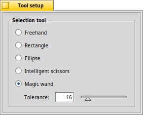

The Selection tool
|  |
The determines how consecutive selections are treated. You can either or . By the way, the menu of the main window holds more selection related commands: . There are several available:
|
Back: The Eraser tool Back: The Color Picker tool